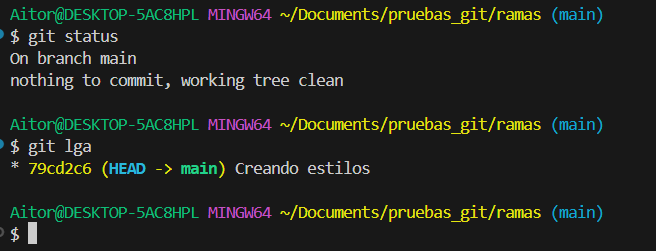
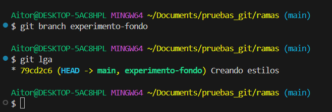
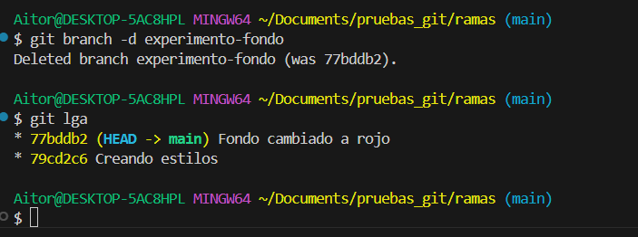
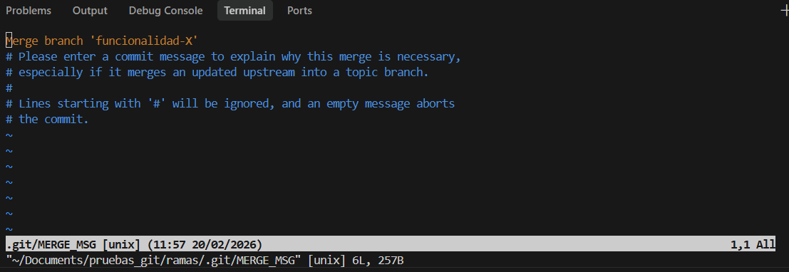
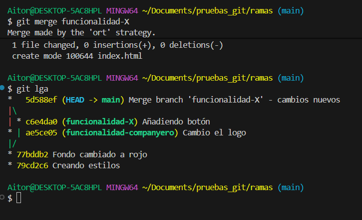
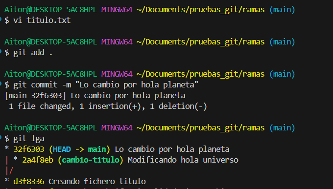

🌿 Ramas en Git¶
Descarga de diapositivas
Las ramas (branches) son una de las características más potentes de Git. Permiten divergir de la línea principal de desarrollo para trabajar en nuevas funcionalidades, arreglar errores o realizar experimentos sin afectar al código estable.
🌳 ¿Qué es una rama?¶
Una rama es, en esencia, un puntero móvil a uno de los commits. La rama por defecto en Git suele llamarse main (o antiguamente master).
Cuando creas una rama, simplemente creas un nuevo puntero para que puedas moverte independientemente.

🛠️ Comandos básicos¶
1. Ver ramas¶
Para ver qué ramas tienes en tu repositorio y en cuál estás situado (marcada con un *):
| Bash | |
|---|---|
2. Crear una rama¶
Para crear una nueva rama (pero sin cambiar a ella):
| Bash | |
|---|---|
3. Cambiar de rama¶
Para moverte a una rama existente y empezar a trabajar en ella:
| Bash | |
|---|---|
También puedes crear y cambiar en un solo paso:
| Bash | |
|---|---|
4. Borrar una rama¶
Una vez que has terminado con una rama y la has fusionado, puedes borrarla:
| Bash | |
|---|---|
👁️ Visualizando el historial (Alias git lga)¶
Para entender realmente qué está pasando con las ramas, es vital ver el "grafo" de commits. Git tiene un comando muy útil para esto, pero es largo de escribir:
| Bash | |
|---|---|
Por eso, es muy común crear un alias (un atajo) llamado lga (Log Graph All). Ejecuta esto una sola vez en tu terminal:
| Bash | |
|---|---|
A partir de ahora, solo tendrás que escribir git lga para ver un mapa colorido de tus ramas.
🚀 Historia de una Rama: El ciclo completo¶
Para entender cómo encajan todas las piezas, vamos a seguir una historia completa. Imagina que estás trabajando en una web y quieres cambiar el color del fondo, pero no quieres romper lo que ya funciona.
Sigue esta historia paso a paso.
1. El punto de partida¶
Estás en la rama main. Todo funciona bien. Verificas dónde estás con git status y ves el historial actual con nuestro alias git lga.

Qué estás viendo en la captura
- Estás en la rama
main(On branch main). - El historial (
git lga) muestra el flujo de los commits actuales yHEAD -> mainindica que te encuentras en ella.
2. Creando el universo paralelo (git branch)¶
Decides crear una rama para tus experimentos. La llamaremos experimento-fondo.
Al ejecutar este comando, Git crea una nueva etiqueta apuntando exactamente al mismo commit donde estás ahora.
| Bash | |
|---|---|
Si miras ahora el historial, verás que ambas ramas (main y experimento-fondo) están en el mismo sitio. El asterisco * o el color diferente te indica que aún sigues en main.

Qué estás viendo en la captura
- Al ejecutar
git lga, ves que ahora la etiquetaexperimento-fondose ha añadido junto amain. - Ambas apuntan al mismo commit, pero
HEAD -> mainindica que todavía sigues en la rama principal.
3. Viajando a la nueva rama (git checkout)¶
De momento solo la has creada, pero sigues en main. Tienes que "mudarte" a la nueva rama para que tus cambios no afecten a la principal.
| Bash | |
|---|---|
Git te confirmará el cambio con un mensaje "Switched to branch...".

Qué estás viendo en la captura
- Git te confirma el movimiento con
Switched to branch 'experimento-fondo'. - El comando
git statuscertifica que has cambiado de rama mostrandoOn branch experimento-fondo.
4. Trabajando seguro (Commit)¶
Ahora estás en tu zona segura. Modificas el archivo estilos.css para poner el fondo rojo. Guardas los cambios y haces un commit.
En este momento clave, tu rama experimento-fondo ha avanzado un paso y tiene un commit nuevo. Sin embargo, main se ha quedado "congelada" en el commit anterior.

Qué estás viendo en la captura
- Al utilizar
git lga, la ramaexperimento-fondo(donde ahora está tuHEAD) aparece un nivel por encima. - Tiene el nuevo commit que acabas de realizar, mientras que la etiqueta de
mainse ha quedado en el commit anterior sin verse alterada.
5. Volviendo a la realidad¶
El experimento ha sido un éxito. Quieres llevártelo a la web real. Pero no puedes fusionar desde la rama experimental, tienes que ir al destino. Volvemos a main.
| Bash | |
|---|---|
¡Magia! Si abres ahora el archivo estilos.css, verás que el fondo rojo ha desaparecido. Ha vuelto a ser como era antes. No te asustes, tus cambios están seguros en la otra rama.

Qué estás viendo en la captura
- Usando de nuevo
git checkoutogit switch, regresas satisfactoriamente amain. - Si revisaras el código de tus archivos, los verías exactamente igual que antes del experimento; la rama principal está intacta.
6. La Fusión (git merge)¶
Estando ya en main (el destino), ordenamos a Git que traiga los cambios de la otra rama.
| Bash | |
|---|---|
Como main no se había movido (nadie más ha trabajado en ella), Git hace un Fast-Forward (avance rápido). Simplemente coge la etiqueta main y la mueve hacia adelante hasta alcanzar a experimento-fondo.

Qué estás viendo en la captura
- Al fusionar (
git merge), Git usa la estrategia de Fast-forward al no haber commits competitivos enmain. - Se listan los cambios incorporados a los archivos resultantes de esta acción.
- Finalmente, con
git lgaobservarás quemainyexperimento-fondovuelven a señalar el mismo y último commit.
7. Limpieza (git branch -d)¶
Ya no necesitamos la rama experimento-fondo. Su trabajo ha terminado y su código ya es parte de main. La borramos para mantener el repositorio ordenado.
| Bash | |
|---|---|

Qué estás viendo en la captura
- Git indica que ha eliminado exitosamente la rama local con
Deleted branch experimento-fondo.... - Al realizar
git lga, el árbol está totalmente limpio, con un solo flujo final enmainque ya contiene todo tu trabajo integrado.
🔗 Fusiones (Merges)¶
Una vez has completado el trabajo en una rama, querrás incorporar los cambios a la rama principal. Esto se hace con el comando merge.
- Primero, sitúate en la rama destino (normalmente
main):Bash - Ejecuta la fusión:
Bash
Existen principalmente dos tipos de fusión:
Fast-forward¶
Ocurre cuando la rama principal no ha avanzado desde que creaste tu rama. Git simplemente "mueve el puntero" hacia adelante. Es lineal y limpio.
👉 Este es el caso que hemos visto en la "Historia de una Rama" anterior.
Recursive (o 3-way merge)¶
Ocurre cuando la rama principal sí ha avanzado (tiene nuevos commits) mientras tú trabajabas en tu rama.
Ejemplo Práctico Detallado:
- Tú creas la rama
funcionalidad-Xy haces un commit (ej. añades un botón). - Mientras tanto, tu compañero sube un cambio a
main(ej. cambia el logo). - Ahora
mainyfuncionalidad-Xhan divergido. Tienen historias diferentes. - Te sitúas en
maine intentas fusionar:Bash -
Git se da cuenta de que no puede hacer Fast-Forward. Automáticamente:
- Coge el último commit de
main. - Coge el último commit de
funcionalidad-X. - Busca el ancestro común de ambos.
- Crea un nuevo commit (Merge Commit) que une los tres puntos.
- Coge el último commit de

Qué estás viendo en la captura
-
El historial (
git lga) antes de fusionar muestra cómo la ramamainy la ramafuncionalidad-Xse han separado. -
Cada rama tiene al menos un commit propio que no está en la otra, formando visualmente un camino divergente en forma de "Y".
6. Como es un "Merge Commit", Git necesita un mensaje. Automáticamente abrirá tu editor de terminal por defecto (suele ser Vim o Nano) para que confirmes el mensaje de merge sugerido: Merge branch 'funcionalidad-X'.

Qué estás viendo en la captura
- Un editor de texto pidiéndote confirmar o modificar el mensaje automático del "Merge Commit".
- Las líneas que empiezan por
#son comentarios que Git ignorará.
¿Cómo salgo de aquí?
- Si es Vim (lo más común): Escribe
:wq(es decir, pulsas la teclaEscpor si acaso, luego los dos puntos:, lawde write, laqde quit) y pulsasEnter. - Si es Nano: Pulsa
Ctrl + Opara guardar,Enterpara confirmar, yCtrl + Xpara salir.
7. Una vez cerrado el editor, Git completará la fusión satisfactoriamente.

Qué estás viendo en la captura
- Git ha creado un nuevo "Merge Commit" para unir ambas historias porque no podía hacer Fast-forward.
- El árbol visual de
git lgamuestra cómo el camino defuncionalidad-Xse une de nuevo al tronco principalmain, cerrando el bucle del desarrollo de la funcionalidad.
⚔️ Conflictos¶
A veces, Git no puede fusionar automáticamente porque se han modificado las mismas líneas de un archivo en ambas ramas de forma diferente. Esto es un conflicto.
Cuando ocurre:
- Git detiene la operación y te avisa.
- Debes abrir los archivos en conflicto. Verás marcas como:
- Edita el archivo para dejar la versión final deseada y borra las marcas (
<<<,===,>>>). - Añade el archivo al área de preparación:
git add archivo.txt. - Finaliza la fusión con un commit:
git commit.
Ejemplo Práctico de Conflicto:
Aviso Importante
En estas capturas nos centraremos exclusivamente en el proceso de resolución de conflictos. Algunos pasos o comandos básicos (como git branch, git checkout o git status) ya se han detallado en apartados anteriores y podrían omitirse visualmente aquí para ir directos al grano.
-
En
main, creamos un archivotitulo.txtque contiene la línea:Hola Mundoy hacemos commit.
Qué estás viendo en la captura
- La creación inicial del archivo y el primer commit en la rama
main.
- La creación inicial del archivo y el primer commit en la rama
-
Creamos una rama
cambio-tituloy cambiamos esa línea por:Hola Universo. Hacemos commit.
Qué estás viendo en la captura
- La modificación del archivo y su posterior commit en la nueva rama.
Nota
Aunque en la imagen no se muestre explícitamente el comando de cambio (
git checkout / switch), podemos saber que estamos allí porque la terminal suele indicarlo entre paréntesis(cambio-titulo).Nota sobre editores
En la captura se ve que se ha usado
vi titulo.txt. Recuerda quevi(ovim) es un editor de texto integrado en la propia terminal. Sin embargo, puedes usar cualquier otro editor de texto (como Visual Studio Code o incluso el Bloc de Notas) para modificar el archivo; no es obligatorio hacerlo por consola. -
Volvemos a
mainy cambiamos la misma línea por:Hola Planeta. Hacemos commit.
Qué estás viendo en la captura
- El cambio del archivo en la rama principal y un
git lgaque muestra que ambas ramas han avanzado por separado, modificando el mismo archivo.
- El cambio del archivo en la rama principal y un
-
Intentamos fusionar:
Bash -
¡BOOM! Git lanza un error de "Merge conflict".

Qué estás viendo en la captura
- Al intentar ejecutar
git merge cambio-titulo, Git detiene el proceso de fusión al detectar que las mismas líneas se han modificado de manera distinta en ambas historias.
- Al intentar ejecutar
-
Si abres el archivo en tu editor, verás las marcas del conflicto.

Qué estás viendo en la captura
- El editor resalta los cambios actuales de
main(<<<<<<< HEAD) frente a los cambios entrantes decambio-titulo(>>>>>>> cambio-titulo).
- El editor resalta los cambios actuales de
-
Solución: Editas el archivo, borras las marcas
<<<,===,>>>y dejas solo la versión final deseada o una mezcla de ambas (ej.Hola planeta!).
Qué estás viendo en la captura
- El archivo limpio, con el código tal y como queremos que quede definitivamente. Ya no hay rastro de las marcas de Git.
-
Guardas el archivo y lo añades al staging area para resolver el conflicto, seguido de un commit para cerrar la fusión.

Qué estás viendo en la captura
- La confirmación en la terminal de que hemos resuelto el conflicto añadiendo el archivo al índice de Git y consolidando el "Merge Commit".
-
El historial vuelve a unirse tras resolver la colisión.

Qué estás viendo en la captura
- El comando
git lgailustra la esperada unión ("Merge Commit") de las ramascambio-tituloymain, pero esta vez originada por la resolución manual de un conflicto.
- El comando
-
Resultado final:

Qué estás viendo en la captura
- El contenido del archivo al volver a la terminal comprueba la correcta resolución del conflicto con el resultado deseado.
📚 Recursos adicionales¶
✅ Ideas clave (muy resumidas)¶
Abrir resumen
git branch <nombre>crea una nueva rama.git branchlista las ramas locales y te dice en cuál estás (*).git checkout <nombre>(ogit switch <nombre>) te mueve a otra rama.git checkout -b <nombre>(ogit switch -c <nombre>) crea una rama e inmediatamente te mueve a ella.git merge <rama>fusiona los cambios de la<rama>indicada hacia la rama en la que estás actualmente situado.git branch -d <nombre>borra una rama (siempre que sus cambios ya estén a salvo integrados).git log --oneline --graph --allmuestra el árbol visual y resumido de todas las diferentes ramas.